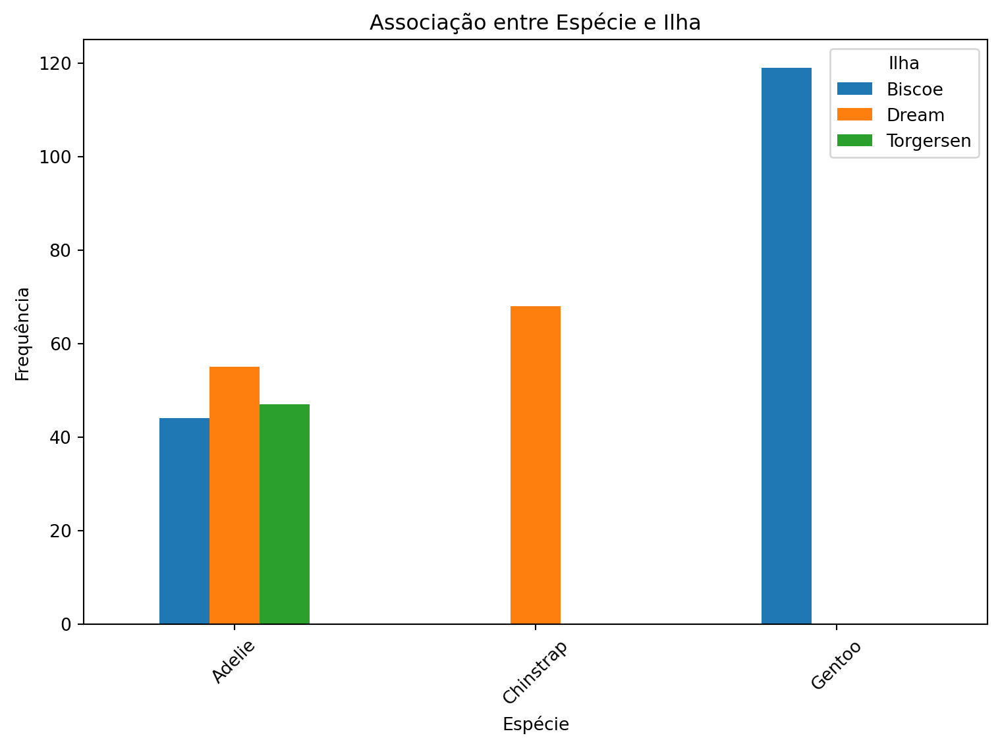
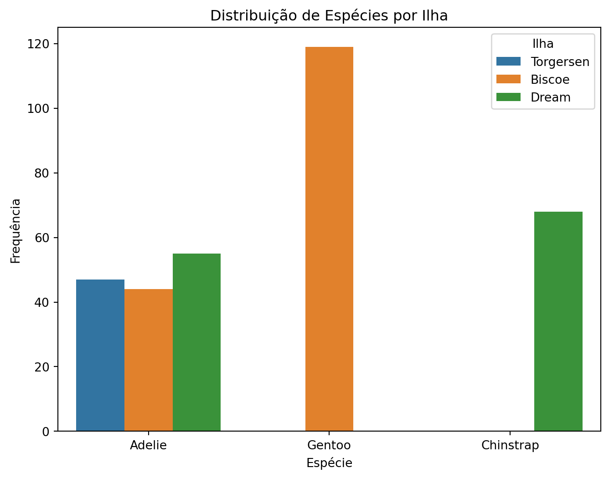
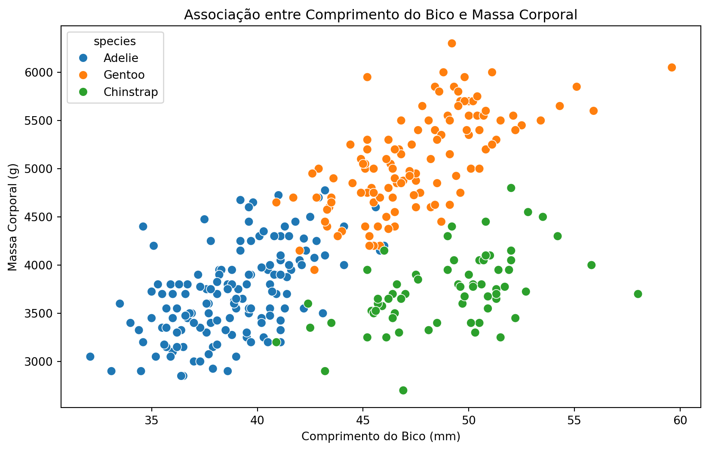
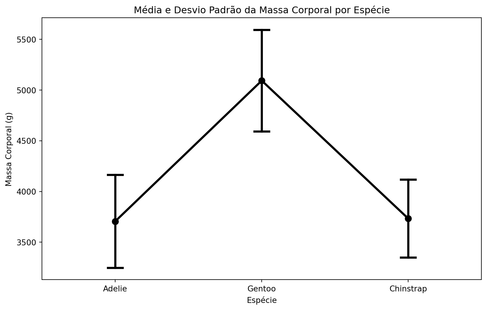
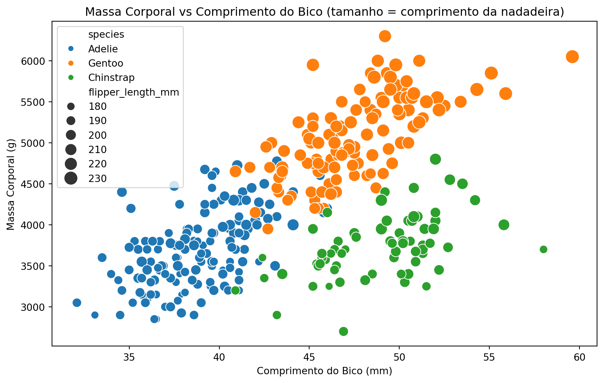
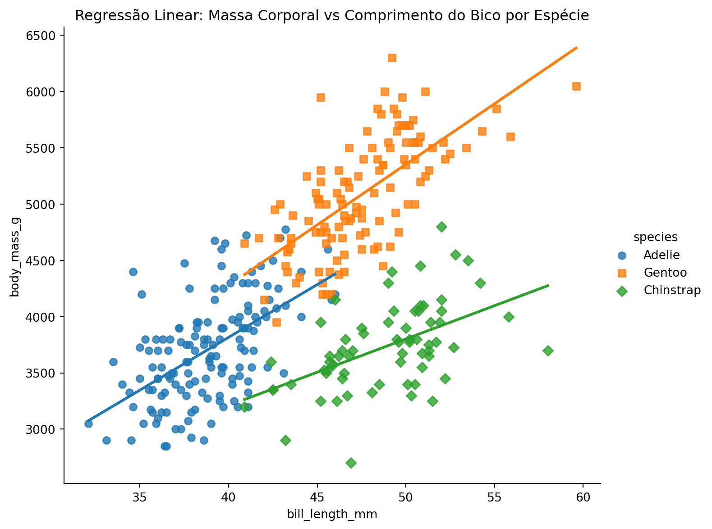

import pandas as pd
import matplotlib.pyplot as plt
from palmerpenguins import load_penguins
import seaborn as sns
import numpy as npMedidas de Associação e Relacionamentos entre Variáveis com Python
Análise de associações entre variáveis usando Python com Pandas, Matplotlib e Seaborn, incluindo tabelas de contingência, correlação e visualizações.
Neste tutorial, exploraremos como analisar padrões de associação entre diferentes tipos de variáveis em Python, utilizando o dataset de pinguins de Palmer.
DicaCódigo em Python
Acompanha este tutorial o Medidas de associação em Python
1 Pacotes necessários
2 Carregando e preparando os dados
penguins = load_penguins().dropna()
penguins.shape(333, 8)# Visualizando as primeiras linhas
penguins.head()| species | island | bill_length_mm | bill_depth_mm | flipper_length_mm | body_mass_g | sex | year | |
|---|---|---|---|---|---|---|---|---|
| 0 | Adelie | Torgersen | 39.1 | 18.7 | 181.0 | 3750.0 | male | 2007 |
| 1 | Adelie | Torgersen | 39.5 | 17.4 | 186.0 | 3800.0 | female | 2007 |
| 2 | Adelie | Torgersen | 40.3 | 18.0 | 195.0 | 3250.0 | female | 2007 |
| 4 | Adelie | Torgersen | 36.7 | 19.3 | 193.0 | 3450.0 | female | 2007 |
| 5 | Adelie | Torgersen | 39.3 | 20.6 | 190.0 | 3650.0 | male | 2007 |
3 Associação entre Duas Variáveis Qualitativas (Categóricas)
Quando queremos analisar a relação entre duas variáveis categóricas, utilizamos tabelas de contingência.
3.1 Exemplo: Associação entre Espécie e Ilha
# Tabela de contingência (frequências observadas)
contingency_table = pd.crosstab(penguins['species'],
penguins['island'])
contingency_table| island | Biscoe | Dream | Torgersen |
|---|---|---|---|
| species | |||
| Adelie | 44 | 55 | 47 |
| Chinstrap | 0 | 68 | 0 |
| Gentoo | 119 | 0 | 0 |
3.2 Frequências Relativas
# Frequências relativas por linha (marginais)
total_row = contingency_table.sum(axis=1)
relative_row = contingency_table.div(total_row, axis=0)
print("Frequências relativas por linha (espécie):")
relative_rowFrequências relativas por linha (espécie):| island | Biscoe | Dream | Torgersen |
|---|---|---|---|
| species | |||
| Adelie | 0.30137 | 0.376712 | 0.321918 |
| Chinstrap | 0.00000 | 1.000000 | 0.000000 |
| Gentoo | 1.00000 | 0.000000 | 0.000000 |
# Frequências relativas por coluna (marginais)
total_col = contingency_table.sum(axis=0)
relative_col = contingency_table.div(total_col, axis=1)
print("Frequências relativas por coluna (ilha):")
relative_colFrequências relativas por coluna (ilha):| island | Biscoe | Dream | Torgersen |
|---|---|---|---|
| species | |||
| Adelie | 0.269939 | 0.447154 | 1.0 |
| Chinstrap | 0.000000 | 0.552846 | 0.0 |
| Gentoo | 0.730061 | 0.000000 | 0.0 |
# Frequências relativas conjuntas
relative_joint = contingency_table / contingency_table.sum().sum()
print("Frequências relativas conjuntas:")
relative_jointFrequências relativas conjuntas:| island | Biscoe | Dream | Torgersen |
|---|---|---|---|
| species | |||
| Adelie | 0.132132 | 0.165165 | 0.141141 |
| Chinstrap | 0.000000 | 0.204204 | 0.000000 |
| Gentoo | 0.357357 | 0.000000 | 0.000000 |
3.3 Visualização: Gráfico de Barras Agrupadas
contingency_table.plot(kind='bar', stacked=False, figsize=(8, 6))
plt.title("Associação entre Espécie e Ilha")
plt.xlabel("Espécie")
plt.ylabel("Frequência")
plt.legend(title="Ilha")
plt.xticks(rotation=45)
plt.tight_layout()
plt.show()
plt.close('all')
# Gráfico alternativo com Seaborn
plt.figure(figsize=(8, 6))
sns.countplot(data=penguins, x='species', hue='island')
plt.title("Distribuição de Espécies por Ilha")
plt.xlabel("Espécie")
plt.ylabel("Frequência")
plt.legend(title="Ilha")
plt.show()
plt.close('all')
Nota
Interpretando a associação:
- Se as proporções fossem similares em todas as categorias, não haveria associação
- Diferenças significativas nas proporções indicam possível associação
- No exemplo, vemos que diferentes espécies têm distribuições distintas entre as ilhas
4 Associação entre Duas Variáveis Quantitativas
Para variáveis quantitativas, utilizamos correlação e covariância.
4.1 Exemplo: Comprimento do Bico vs Massa Corporal
# Gráfico de dispersão
plt.figure(figsize=(10, 6))
sns.scatterplot(
data=penguins,
x='bill_length_mm',
y='body_mass_g',
hue='species',
s=60
)
plt.title("Associação entre Comprimento do Bico e Massa Corporal")
plt.xlabel("Comprimento do Bico (mm)")
plt.ylabel("Massa Corporal (g)")
plt.show()
plt.close('all')
4.2 Covariância e Correlação
# Covariância
covariance = penguins[['bill_length_mm', 'body_mass_g']].cov()
print("Matriz de Covariância:")
covarianceMatriz de Covariância:| bill_length_mm | body_mass_g | |
|---|---|---|
| bill_length_mm | 29.906333 | 2595.623304 |
| body_mass_g | 2595.623304 | 648372.487699 |
# Correlação de Pearson
correlation = penguins[['bill_length_mm', 'body_mass_g']].corr()
print("Matriz de Correlação:")
correlationMatriz de Correlação:| bill_length_mm | body_mass_g | |
|---|---|---|
| bill_length_mm | 1.000000 | 0.589451 |
| body_mass_g | 0.589451 | 1.000000 |
4.3 Entendendo a Correlação como Covariância Padronizada
# Padronizando as variáveis (Z-score)
penguins_padr = penguins[['bill_length_mm', 'body_mass_g']].copy()
penguins_padr = (penguins_padr - penguins_padr.mean()) / penguins_padr.std()
print("Média das variáveis padronizadas:", penguins_padr.mean().values)
print("Desvio padrão das variáveis padronizadas:", penguins_padr.std().values)Média das variáveis padronizadas: [-9.38855266e-16 -8.53504788e-17]
Desvio padrão das variáveis padronizadas: [1. 1.]# A covariância de variáveis padronizadas = correlação
print("Covariância das variáveis padronizadas:")
penguins_padr.cov()Covariância das variáveis padronizadas:| bill_length_mm | body_mass_g | |
|---|---|---|
| bill_length_mm | 1.000000 | 0.589451 |
| body_mass_g | 0.589451 | 1.000000 |
5 3. Associação entre Variável Quantitativa e Qualitativa
5.1 Exemplo: Massa Corporal por Espécie
# Resumo descritivo por grupo
grouped_mass = penguins.groupby('species')['body_mass_g'].describe()
grouped_mass| count | mean | std | min | 25% | 50% | 75% | max | |
|---|---|---|---|---|---|---|---|---|
| species | ||||||||
| Adelie | 146.0 | 3706.164384 | 458.620135 | 2850.0 | 3362.5 | 3700.0 | 4000.0 | 4775.0 |
| Chinstrap | 68.0 | 3733.088235 | 384.335081 | 2700.0 | 3487.5 | 3700.0 | 3950.0 | 4800.0 |
| Gentoo | 119.0 | 5092.436975 | 501.476154 | 3950.0 | 4700.0 | 5050.0 | 5500.0 | 6300.0 |
# Para outra variável
grouped_bill = penguins.groupby('species')['bill_length_mm'].describe()
grouped_bill| count | mean | std | min | 25% | 50% | 75% | max | |
|---|---|---|---|---|---|---|---|---|
| species | ||||||||
| Adelie | 146.0 | 38.823973 | 2.662597 | 32.1 | 36.725 | 38.85 | 40.775 | 46.0 |
| Chinstrap | 68.0 | 48.833824 | 3.339256 | 40.9 | 46.350 | 49.55 | 51.075 | 58.0 |
| Gentoo | 119.0 | 47.568067 | 3.106116 | 40.9 | 45.350 | 47.40 | 49.600 | 59.6 |
5.2 Visualização: Boxplot por Grupos
plt.figure(figsize=(10, 6))
sns.boxplot(x='species', y='body_mass_g', data=penguins)
plt.title("Distribuição da Massa Corporal por Espécie")
plt.xlabel("Espécie")
plt.ylabel("Massa Corporal (g)")
plt.show()
plt.close('all')
5.3 Gráfico de Médias com Barras de Erro
plt.figure(figsize=(10, 6))
sns.pointplot(
data=penguins,
x='species',
y='body_mass_g',
capsize=0.1,
color='black',
errorbar='sd'
)
plt.title("Média e Desvio Padrão da Massa Corporal por Espécie")
plt.xlabel("Espécie")
plt.ylabel("Massa Corporal (g)")
plt.show()
plt.close('all')
Nota
Interpretando boxplots por grupos:
- Medianas diferentes: Indica diferenças entre os grupos
- Sobreposição das caixas: Grupos com distribuições similares
- Outliers: Valores atípicos em cada grupo
6 Análises Multivariadas
6.1 Scatter Plot com Múltiplas Dimensões
plt.figure(figsize=(10, 6))
sns.scatterplot(
data=penguins,
x='bill_length_mm',
y='body_mass_g',
hue='species',
size='flipper_length_mm',
sizes=(50, 200)
)
plt.title("Massa Corporal vs Comprimento do Bico (tamanho = comprimento da nadadeira)")
plt.xlabel("Comprimento do Bico (mm)")
plt.ylabel("Massa Corporal (g)")
plt.show()
plt.close('all')
6.2 Regressão Linear por Grupos
sns.lmplot(
data=penguins,
x='bill_length_mm',
y='body_mass_g',
hue='species',
height=6,
aspect=1.2,
markers=['o', 's', 'D'],
ci=None
)
plt.title("Regressão Linear: Massa Corporal vs Comprimento do Bico por Espécie")
plt.show()
plt.close('all')
6.3 Pairplot: Todas as Combinações de Variáveis
# Matriz de gráficos de dispersão
sns.pairplot(
data=penguins,
vars=['bill_length_mm', 'bill_depth_mm', 'flipper_length_mm', 'body_mass_g'],
hue='species',
diag_kind='kde',
height=2.5
)
plt.show()
plt.close('all')
6.4 Matriz de Correlação Completa
# Calcular correlações para todas as variáveis numéricas
numeric_vars = ['bill_length_mm', 'bill_depth_mm', 'flipper_length_mm', 'body_mass_g']
correlation_matrix = penguins[numeric_vars].corr()
# Heatmap da matriz de correlação
plt.figure(figsize=(8, 6))
sns.heatmap(
correlation_matrix,
annot=True,
cmap='coolwarm',
center=0,
square=True,
fmt='.2f'
)
plt.title("Matriz de Correlação das Variáveis Quantitativas")
plt.tight_layout()
plt.show()
plt.close('all')
7 Exemplos Adicionais de Visualização
7.1 Comprimento da Nadadeira vs Massa Corporal
sns.lmplot(
data=penguins,
x='flipper_length_mm',
y='body_mass_g',
hue='species',
height=6,
aspect=1.2,
markers=['o', 's', 'D'],
ci=None
)
plt.title("Massa Corporal vs Comprimento da Nadadeira por Espécie")
plt.show()
plt.close('all')
7.2 Altura vs Comprimento do Bico
sns.lmplot(
data=penguins,
x='bill_depth_mm',
y='bill_length_mm',
hue='species',
height=6,
aspect=1.2,
markers=['o', 's', 'D'],
ci=None
)
plt.title("Comprimento vs Altura do Bico por Espécie")
plt.show()
plt.close('all')
8 Resumo dos Tipos de Associação
| Tipos de Variáveis | Medidas | Visualizações |
|---|---|---|
| Qualitativa vs Qualitativa | Tabelas de contingência, frequências relativas | Barras agrupadas, countplot |
| Quantitativa vs Quantitativa | Correlação, covariância | Scatter plot, pairplot |
| Quantitativa vs Qualitativa | Estatísticas por grupo (média, mediana) | Boxplot, pointplot |
| Multivariada | Correlações múltiplas | Pairplot, heatmap, lmplot |
9 Dicas Práticas
9.1 Escolhendo a visualização adequada
# Para escolher o gráfico certo, considere:
print("Tipos de dados:")
print(penguins.dtypes)Tipos de dados:
species object
island object
bill_length_mm float64
bill_depth_mm float64
flipper_length_mm float64
body_mass_g float64
sex object
year int64
dtype: object9.2 Identificando correlações interessantes
# Encontrar as maiores correlações
corr_matrix = penguins[numeric_vars].corr()
# Remover a diagonal (correlação de uma variável consigo mesma)
corr_matrix_clean = corr_matrix.where(np.triu(np.ones(corr_matrix.shape), k=1).astype(bool))
# Empilhar e ordenar por valor absoluto
correlations = corr_matrix_clean.stack().sort_values(key=abs, ascending=False)
print("Correlações mais fortes:")
correlations.head()Correlações mais fortes:flipper_length_mm body_mass_g 0.872979
bill_length_mm flipper_length_mm 0.653096
body_mass_g 0.589451
bill_depth_mm flipper_length_mm -0.577792
body_mass_g -0.472016
dtype: float64